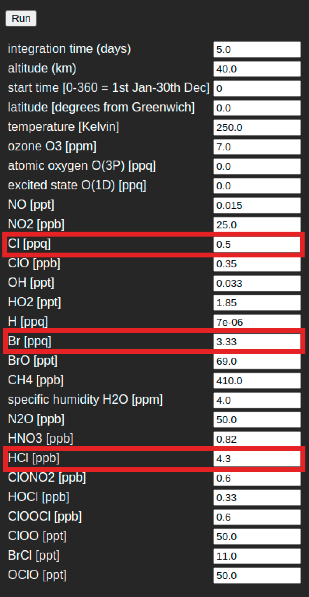
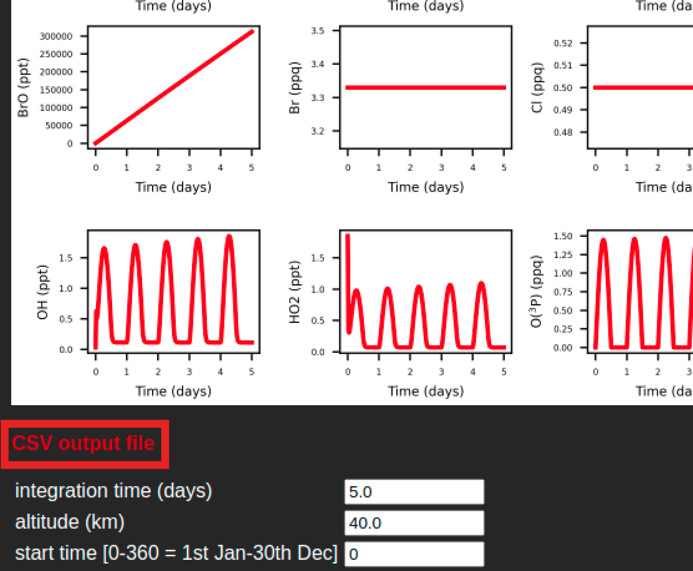

Here we walk you through a few example applications of BOCS. Before we start, carry out the following two steps:

Figure 1. Default input settings under run model. Highlighted in red are fields to be modified as part of exercise 1.
- Open a second tab with another instance of the BOCS webpage. Go to run model. This will allow you to keep reading this tutorial while running the model.
- Under run model you will find the entry form for mass mixing ratios of each chemical species involved in the BOCS mechanism, as well as for certain physical environment parameters (Figure 1). For all simulations, you will modify these initial chemical and envionmental conditions and analyse their effect on the time evolution of the concentration of all chemical species involved. Once you have specified the desired conditions, you can conduct a new simulation by clicking the "Run" button.
We will now go through exercises that illustrate how BOCS can be used to understand key concepts of stratospheric chemistry. Afterwards, using BOCS, you will be able to (learning outcomes):
- Convert concentration measures of chemical species to estimate appropriate input measures for BOCS.
- Interpret results of different sets of BOCS simulations to study the effect of changing the initial chemical and physical conditions on stratospheric ozone.
- Compile a list of the main chemical reactions driving differences between BOCS simulation results.
- Assess the relative effectiveness of bromine and chlorine in depleting stratospheric ozone.
- Judge the most effective pathways to reduce ozone depletion in the tropics and high latitudes.
Exercise 1
Go to the BOCS website and select the tab run model. Explore the effect of changing the initial conditions for the amount of chlorine (Cl) and bromine (Br) on ozone (O3) mixing ratios. Note that the initial chemical conditions for BOCS are provided as mass mixing ratios (kg/kg of air). You will thus need to convert concentration measures accordingly.
Conduct the following set of four simulations. For this you will have to change the corresponding BOCS inputs depending on the simulation (highlighted in red in Figure 1):
- Run 1 - Baseline scenario. Keep the initial conditions as per default. Save the output figure (right click on figure->Save image as) as well as the csv output file on your computer (Figure 2). The output figure visualizes time-dependent mass mixing ratios of 16 highly important chemical species. The csv output file provides number densities (in number of molecules per cubic metre) for all chemical species involved in the BOCS mechanism.
- Run 2 - high reactive chlorine scenario. Increase the initial mass mixing ratio of Cl by 10 ppbv (i.e. convert to mass mixing ratios). As before save your results, under a different file name, to your computer.
- Run 3 - high reactive bromine scenario. Increase the initial mass mixing ratio of Br by 10 ppbv (i.e. convert volume to mass mixing ratio). Save your results.
- Run 4 - high HCl. Increase the initial mass mixing ratio of HCl by 10 ppbv (i.e. again convert to mass mixing ratio). Save your results.
Comment on the following questions and
explain your results (where necessary visualize your results using a software such as Excel):
- Create a single graph showing ozone concentrations for each simulation as a function of time. What do you observe? Explain the relative changes in ozone concentrations across the scenarios.
- Compare the average concentrations of reactive chlorine (Cl+ClO) and reactive bromine (Br+BrO) on the fifth day in each simulation. What do you observe? How do you explain the results? What does this imply for the relative effectiveness of chlorine and bromine in depleting ozone?
- Comment on additional chemical species and chemical reactions you have learned about in ENV-5015A that would be beneficial for studying the relative effectiveness of bromine and chlorine in depleting stratospheric ozone. What is the BOCS chemical mechanism currently missing for a more complete evaluation, especially in terms of bromine reservoir compounds?
- Comment on the implications of your results concerning policy measures to reduce both CFC and Halon emissions to the atmosphere.

Figure 2. Once a model run has been conducted, a link to a csv output file, containing time-dependent number densities for all chemical species in the BOCS chemical mechanism becomes availbale. To save the output, right-click on the red highlighted link and select "Save link as".
Solutions to exercise 1